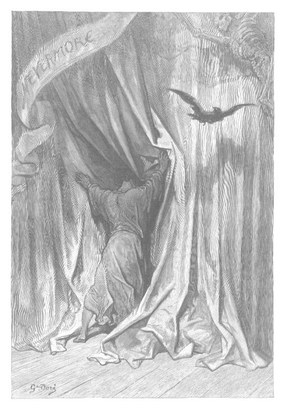

past the last streetlight · turning 09 · the warehouse at the end · the work lights left on behind the set
Turning 09, an empty warehouse at the end of the road
The Haunted House
Built of plywood by the people who turned up, and lit only where the light gets through the seams.
Past the last streetlight, at the end of the road, there is a warehouse nobody was using. Inside it, somebody built a house: plywood flats screwed to timber, gaffer tape over the joins, every wall painted by people who had never painted a wall to look old before and did it anyway. The work lights are on behind the set. Inside the house you never see them. You see only where their light comes through: the seams where two flats do not quite meet, the gap under a door, the cracks between the boards over a window.
Things are hidden in the house: spooky things from our own street and our own pages, and, as people bring them, haunted things our community has made and things we love. There are two ways through it. With the lights up, everything is laid out in one list you can scroll. With the lights down, it is a hunt: go from room to room and look in places, and what is hidden there turns up where you looked. Nothing jumps out, nothing makes a sound unless you press play on its soundtrack, and the house counts nothing you find.
For me, haunted houses bring together themes of the horror of existence, the inevitability of death, remembrance of ancestors, DIY, making, creativity, thresholds, liminality, and seasonal rest.
Its channel on the CB is for haunted things: share a picture or a link of something spooky you made or love, and say what it is. Sign on and tune the radio to This room while you are in here, or open the house’s channel on the chat page.
The house’s soundtrack
Hallowscenes is a soundtrack for the house. Enigma, who is in our community, made it with Suno, an AI music generator, and asked for it to be in here. It plays from Suno, where it lives, in Suno’s own player.
It is the one thing in the house that makes a sound, and only when you press it. Nothing starts when you walk in. Each piece says how long it runs before you press it, and nothing reaches Suno until you do: the first press brings in Suno’s player for that piece, and its own play button starts it. A piece ends when it ends, and nothing plays the next one by itself.
Suno’s player shows a cover picture for each piece, which Suno’s generator made. The music is Enigma’s, not under this site’s licence, and it comes out of the house the moment she asks.
The lights
Lights down: look for what is hidden
Each room of the house is below, and every place to look in it is a button that says where it looks. Press one and whatever is hidden there turns up right under it; press it again to put it back. Every room ends with the way out.
-
The porch
Three painted steps, a pumpkin nobody lit, and the door with light all round its edges.
The way out: back to the road, or put the lights up.
-
The hall
A long dark hall with the stairs going up out of it and a coat cupboard under them.
The way out: back to the road, or put the lights up.
-
The parlour
A painted fireplace that has never been lit, a card table, and an armchair with a book face down on it.
The way out: back to the road, or put the lights up.
-
The stairs
They turn halfway, at a landing, and the light comes up between the treads.
The way out: back to the road, or put the lights up.
-
The attic
Under the eaves, with the round window boarded in a cross and everything under dust sheets.
The way out: back to the road, or put the lights up.
-
The cellar
Where the first Halloween haunted houses were. A gramophone, and a draught from somewhere.
The way out: back to the road, or put the lights up.
-
Behind the set
Through the gap between two flats, where the light comes from: the work lights, the crates, and the people who built the house.
The way out: back to the road, or put the lights up.
Lights up: everything in the house
Every thing hidden in the house, in the order you would find it walking through, with where it hides.
-
Weird
A page of ours · Stimpunks
Our glossary entry for weird pride, left under the mat for whoever comes to the door: the refusal to be ashamed of the things people find weird.
Where it hides: The porch: lift the doormat
-
Black Leather Lagoon
A room on this street · Stimpunks
Turning 01 on this same road: a drive-in screen standing in black water, an appreciation of The Cramps, and the room where it is always Halloween.
Where it hides: The hall: open the coat cupboard under the stairs
-
Infodumplings: Every Chimera Is Whole
A page of ours · Stimpunks
Our write-up for an evening of making chimeras together, which listens for the word monster in a video about them and says what it does.
Where it hides: The hall: look in the hall mirror
-
The Oracle Deck
A room on this street · Stimpunks
A deck in a dark room where every card asks a question and none of them tells your fortune.
Where it hides: The parlour: turn over the cards on the table
-
The raven comes in through the curtain
A picture · Gustave Doré

The first of Doré’s twenty-six engravings for The Raven, from the 1884 edition: a figure collapsed at the foot of a curtain and the bird flying in over him, under the word NEVERMORE. It is public domain everywhere: Doré died in 1883 and the edition was published in 1884; the scan’s own page.
Where it hides: The parlour: look behind the painting over the fireplace
-
The Mopery
A room on this street · Stimpunks
Where that engraving came from: a dark academia library with candles along every top shelf, and The Raven with all of Doré’s plates set where their own captions say they belong.
Where it hides: The parlour: pick up the book face down on the armchair
-
The Doomscroll
A room on this street · Stimpunks
Public domain poems of doom and gloom, laid out as a feed of bad news on an actual scroll, every poem whole.
Where it hides: The stairs: look on the landing where the stairs turn
-
Chimera Obscura
A room on this street · Stimpunks
A camera obscura where you make a creature out of two animals and nobody calls it anything less than whole.
Where it hides: The attic: open the trunk under the eaves
-
The Repeater
A room on this street · Stimpunks
Turning 06: a radio mast on the ridge against the skyglow, and a line you can leave open that hisses, goes nowhere and sends nothing.
Where it hides: The attic: pull the dust sheet off the old wireless
-
Gather ‘Round Creeps
A page of ours · Stimpunks
Our punky Halloween playlist, from 2024, full of weird pride. The gramophone only points at it.
Where it hides: The cellar: wind up the gramophone
-
Sithen
A room on this street · Stimpunks
Turning 02: a fairy fort under a full moon, with the rules of the Otherworld nobody will say out loud, and a door that room does not open.
Where it hides: The cellar: follow the draught to the bricked-up arch
-
Show Your Work
A room on this street · Stimpunks
A garage with the door rolled up, where our community shows what it is making before it is finished. Behind every set is a workshop.
Where it hides: Behind the set: step through the gap between two flats
-
Hallowscenes
Made by somebody in our community · Enigma
A soundtrack for the house, made by Enigma with Suno, an AI music generator. It plays only when you press it, piece by piece, in the house’s soundtrack.
Where it hides: Behind the set: look over the sound desk
Samhain, and the thin places
Halloween is All Hallows’ Eve, the night before All Saints’ Day on the first of November. It sits on top of something much older: Samhain, at the end of the harvest, when the light half of the year turned into the dark half.
According to traditional beliefs surrounding Samhain, this was a liminal time when the boundary between the world of the living and the spirit world was thought to become thinner, allowing greater contact with the Otherworld and with those who had passed away.
The old word for a threshold, the strip of floor in a doorway between one room and the next, is the Latin limen, and it is where liminal comes from. The folklorist Arnold van Gennep used the idea in 1909 for the middle of a rite of passage: the part where you have left one state and not yet arrived in the next. A doorway, dusk, the turn of the year.
This house is built out of that idea. Every wall is a flat, and every seam is a threshold with the light on the other side of it. The other side is right there. It is the work lights, and the people who built the house, sitting on upturned crates behind the parlour wall.
Whether you understand this literally, symbolically or simply as an invitation to pause and reflect, there is something profoundly beautiful about the idea.
Where haunted houses came from
This is what a haunted house is supposed to do. They exist to scare people.
Chris Heller’s short history of the haunted house, for Smithsonian Magazine, starts in London. In 1802 Marie Tussaud showed the wax heads of the French Revolution’s guillotined, made from the death masks she had cast of them, and called her permanent show the Chamber of Horrors. Around the turn of the century the Grand Guignol theatre in Paris staged dismemberment on its stage. In 1915 a fairground at Liphook, in England, opened one of the first ghost houses.
The Halloween haunted house is American, and it arrived in the Great Depression at about the same time as trick-or-treat, as a way to stop young people’s pranks from turning into vandalism. Lisa Morton, who wrote Trick or Treat: A History of Halloween, put it plainly:
Cities looked for ways to buy these kids off, essentially.
The first ones were basements. Families decorated their cellars and children went from house to house, from one scene to the next. A 1937 party pamphlet has fur and strips of raw liver on the walls, wet sponges hung from the ceiling, a crawl through a long dark tunnel, and at the end a black cardboard cat outlined in luminous paint.
The tradition could not exist without Halloween; Halloween would not be the same without it.
Disneyland’s Haunted Mansion opened in 1969, its ghosts made with Pepper’s ghost, an old stage illusion of reflected light, and Morton calls it the start of the haunted attraction industry. Within a few years the Jaycees, the United States Junior Chamber, were raising money with haunted houses across the country, built by volunteers.
Then the professional houses came, with film tie-ins and advertising. A fire at a haunted house in New Jersey killed eight teenagers who could not get out. The rules got stricter, and many of the volunteer houses could not keep up. Larry Kirchner, of the Haunted House Association, told Heller:
It was based on the premise that people would volunteer, but when you have people opening big haunted houses with lots of advertising, that's hard.
That fire is why every room in this house has its way out written in it, and why the way out is never called anything but the way out.
Built by hand, in empty warehouses
Ryan remembers them on the outskirts of town, in warehouses that were usually empty, built by the people who turned up to build them.
I recall being impressed by the DIY spirit of some of them. Folks put a lot of work into making a compelling experience. They poured craft into the effort.
This one is a set and does not hide it. You can see the screws in the flats, the timber jacks propping up the sides, the tape on the seams and the light coming through them. That is the frightening part and the good part at once: a few people with no budget made you feel something in the dark, and you can see exactly how. It is the same thing Show Your Work says about showing the work while it is still being made.
Eldritch, weird, and who gets made the monster
Eldritch is an old Scots word for unearthly: in Robert Burns’s Tam o’ Shanter, in 1791, the witches give an eldritch skreech. Where its first half comes from is not settled. One guess is elf, and another is an old English root meaning foreign, strange, other. H. P. Lovecraft brought the word back into fashion, and much of the horror he made with it was his fear of people unlike himself.
That is the oldest trick in horror, and the cheapest: make the frightening thing somebody who is different. Disabled bodies, minds that work differently, queer people and strangers have all been made into the monster, and the freak show charged admission for it. Our own write-up for an evening of chimeras heard it happen in a video about monsters:
It is a throwaway line, and it is exactly how the freak show worked: a human body, described as part animal.
Weird is the word we kept. Our Weird page is a long argument for weird pride, and it quotes Ferrous, aka Oolong:
A lot of neurodivergent kids learn early on that they’re ‘weird’. The lucky ones learn to embrace it before they’re forced to internalise the implied shame.
Weirdmisia — hatred of the weird — is the enemy of diversity.
So this house is eldritch, and nobody in it is the monster. On Halloween everybody wears the strange, and here the different are the ones who built the place. Our Halloween playlist, two years ago, said it in four words:
Death, divergence, and whimsy.
The darker half of the year
Samhain closed the harvest and opened the dark half of the year, when the fields rest.
The darker half of the year can become a time of introspection, rest and spiritual renewal.
Remembering belongs here too. Ryan’s brief names remembrance of ancestors, and the people we have lost are part of why a thin veil is a lovely idea rather than a frightening one. Other peoples keep their own days for their dead, in their own ways; this house does not borrow them.
On this street rest is owed, not earned, which is the Healing Checkpoint’s whole argument. The house stays up all year, so there is no hurry. Come back in the spring if the dark half is for sleeping.
Bring something to the house
Somebody in our community asked for this house in the Sandbox’s suggestion box: a place to share haunted things we have made and things we love, pictures and links, with one way to look for them like a scavenger hunt and one way to scroll through them all.
Bring a picture or a link to the house’s channel on the CB. The channel takes pictures and links, like every channel, and keeps them two weeks unless our administrators set it otherwise. Sign on, tune the radio to This room in here, or open the house’s channel on the chat page, and say what it is and whose.
To put something in the house for good, hidden in one of its rooms and in the list with the lights up, say so on the channel or in the suggestion box. It goes in with the name of whoever made it, the way they want to be named, and the day they said yes, and it comes out the moment they ask, deleted rather than hidden. Something you love that somebody else made goes in as a link with their name on it, never as a copy of their picture.
What is not in this house
- Nothing jumps out. No sound unless you press play on the soundtrack, nothing moves at any setting, and nothing appears unless you looked for it. A haunted house is allowed to frighten people; this one does it slowly and you can always see the light.
- A way out of every room. Every room in the hunt ends with the way out: back to the road, or the lights up. It is never called a chicken exit, and leaving early is a real way through the house.
- Nobody is the monster. No madness, no asylum, no disabled body and no difference is the scare in here, however old the trick is.
- Nothing counted. No score, no tally of what you found, and the house never says how many things are left to find.
- Nothing kept. The house remembers nothing about you. What you found is put back when you leave, and the next visit starts with everything hidden again.
Who reads the channel, and for how long
- Everybody signed on to the CB can read this room’s channel, so share only what you would show a room with all of them in it. It keeps the house norms, like every channel, and a picture is part of its message and goes when the message does.
- Unless our administrators set this channel otherwise, every message on it goes two weeks after it was sent, and the radio says what it keeps, first under In this channel.
- Say what is in it when what you share has blood, a jump or a flash in it, so somebody can choose before they press.
Next door
- The Outskirts, the road this is a turning off, where nobody was sent and everything keeps its own hours.
- Black Leather Lagoon, turning 01, where it is always Halloween and our Halloween playlist lives.
- Sithen, turning 02, for the Otherworld seen from outside the ring.
- Show Your Work, for what our community is making, shown before it is finished.
- The Sandbox, where somebody asked for this house, in the suggestion box.
Whose this is
- The house is ours: the set, its rooms, where everything hides, and every sentence not in a quotation, drawn and written as code by Claude, an AI model made by Anthropic, to Ryan’s brief and to the suggestion that asked for it. Nothing on this page calls an AI while you read it.
- Every quotation belongs to whoever said it and is credited where it stands: Chris Heller, Lisa Morton, Larry Kirchner, Hannah Daisy, Ryan Boren and Ferrous, aka Oolong, and Stimpunks. Chris Heller’s A Brief History of the Haunted House was read on 28 October 2026, in the Internet Archive's copy, because the magazine answers a script with a refusal. Hannah Daisy’s Halloween and the Thinning Veil: When the Worlds Feel Closer was read on 28 October 2026. Every quotation is 50 words or fewer, and
tools/make-haunted-house.pychecks the ones from our own pages against them word for word whenever our copy of stimpunks.org is on the machine. - The soundtrack is Enigma’s: Hallowscenes, which she made with Suno and asked to have in the house, given on 2026-10-28. It plays from Suno’s own player, is not under this site’s licence, and comes out the moment she asks.
- Every thing in the house is credited to whoever made it. The engraving is Gustave Doré’s, public domain, as it hangs in the Mopery; the rooms are this street’s and the pages are stimpunks.org’s.
- Where eldritch comes from is read in Wiktionary’s entry for it, which says nobody is sure; the history of the haunted house is Chris Heller’s, as written above, and no date or name in it was added from memory.
- The type is Mystery Quest, by Sideshow, for the house’s name and its headings, under the SIL Open Font License, and Domine, by Impallari Type, for everything you read, under the SIL Open Font License, both read off their own records. More in the liner notes.
Job marker — an old iron key dropped on the warehouse floor
You have found a job marker. The Adventurer’s Guild is a shopfront on the street, and it posts jobs that send you round these rooms. Take the code below to its board and that job is done. Nothing here is scored, nothing expires, and one is a perfectly good number of jobs to do.
The job: Where the first ones were
Before the code: The first Halloween haunted houses, in the Great Depression, were in one part of family homes, decorated scene by scene for children to go from house to house through. Which part?
Hint 1
It is in the paragraph that starts in bold.
Hint 2
It is under the house, and this house has one too.
Last hint
Downstairs, under the floor: the basement.
Give me the answer
The answer is The basement. The basement, or the cellar. Chris Heller's history for Smithsonian Magazine says families decorated their basements and held house-to-house parties, and a 1937 pamphlet has fur and raw liver on the walls and a black cardboard cat outlined in luminous paint at the end. Lisa Morton says the cities were looking for ways to buy young pranksters off.
Taking the answer is a real way through this, not a lesser one. Nothing is watching and nothing is written down.
Quest code: SKELETONKEY
That is the one.
The basement, or the cellar. Chris Heller's history for Smithsonian Magazine says families decorated their basements and held house-to-house parties, and a 1937 pamphlet has fur and raw liver on the walls and a black cardboard cat outlined in luminous paint at the end. Lisa Morton says the cities were looking for ways to buy young pranksters off.
Quest code: SKELETONKEY
HOW LOUD DO YOU WANT IT?
Starts wherever your device says. Nothing moves, flashes, or plays until you say so — and in this house nothing moves at any setting, MAX GLITTER included, because the work lights are on, steadily, behind the set.